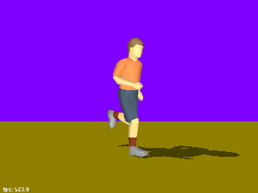

PlanarShadows.h
The biped is displayed on a colored rectangle. A light is behind and above the biped. The shadow of the biped is cast on the rectangle. The biped can be animated. The shadow is, of course, animated as a result.
|  |
|
Planar Shadows: PlanarShadows.h The biped is displayed on a colored rectangle. A light is behind and above the biped. The shadow of the biped is cast on the rectangle. The biped can be animated. The shadow is, of course, animated as a result.
|